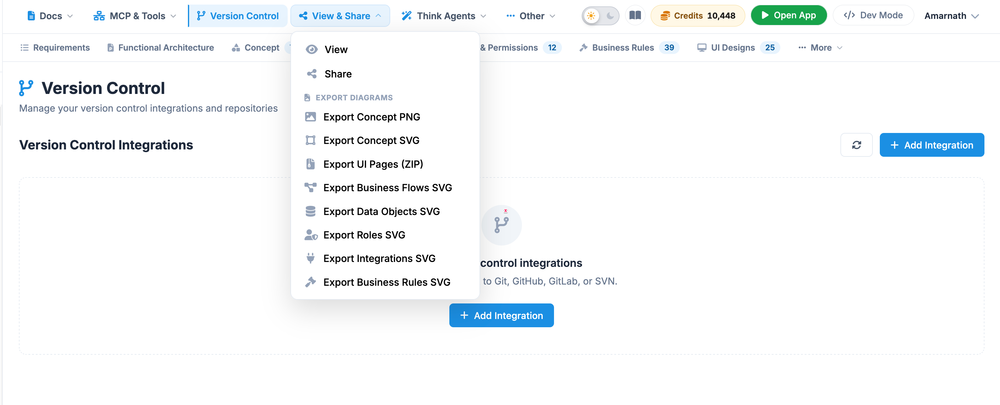

View & Share
The View & Share menu on the top navigation bar provides options for previewing, sharing, and exporting project design assets. It allows users to collaborate with team members or download generated diagrams and assets in standard file formats.

Menu Items Description
- View: Opens a presentation or read-only mode to display project assets without editing controls.
- Share: Generates a link or opens sharing options to invite collaborators and stakeholders to view or edit the project workspace.
EXPORT DIAGRAMS
- Export Concept PNG: Downloads a high-resolution raster image file (.PNG) of the overall concept design.
- Export Concept SVG: Downloads a scalable vector graphics file (.SVG) of the primary concept model, suitable for scalable editing or vector design tools.
- Export UI Pages (ZIP): Archives and downloads all generated user interface screens into a single compressed (.ZIP) package.
- Export Business Flows SVG: Exports the workflow diagrams and process maps as a vector graphic (.SVG).
- Export Data Objects SVG: Downloads vector representations (.SVG) of database models, schema structures, and data relationships.
- Export Roles SVG: Exports the user roles, permissions, and access hierarchy diagrams as a vector graphic (.SVG).
- Export Integrations SVG: Downloads the system architecture and third-party integration mapping diagrams in vector format (.SVG).
- Export Business Rules SVG: Exports logic rules, decision criteria, and system constraints as a scalable vector graphic (.SVG).